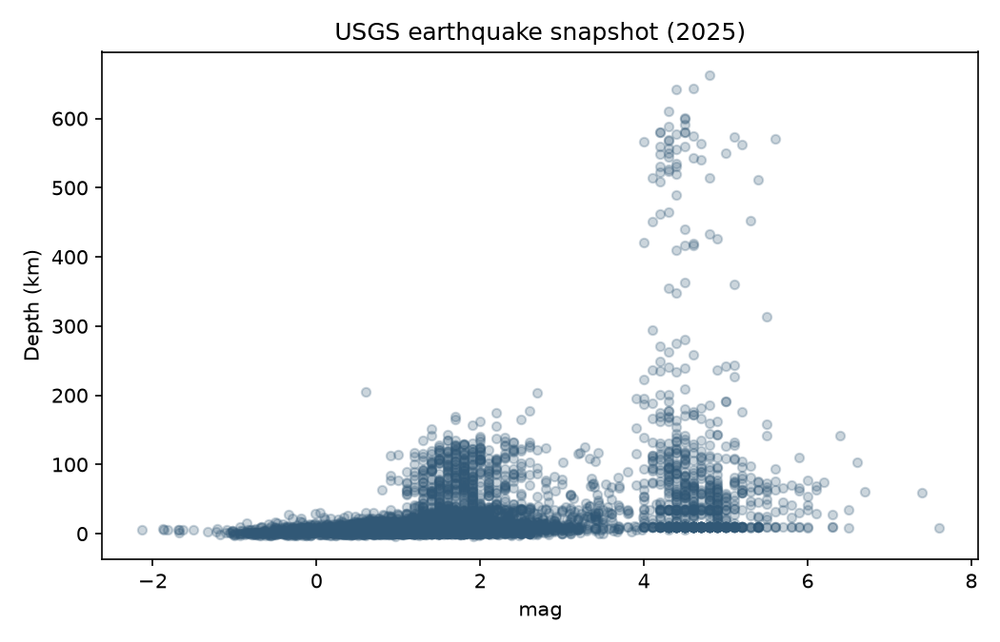

It’s been a while!
久しぶり！
Pythonで、まずは一言。
print("久しぶり！")久しぶり！print() は文字を表示する。ここでは、まだ繰り返さない。
I like coffee,
while my friend likes tea
私はコーヒー派。友達はお茶派。
二人の好みを、変数にしてみよう。
me = "コーヒー"
friend = "お茶"
print(f"私は{me}、友達は{friend}")私はコーヒー、友達はお茶ここでは while ＝「一方で」。好みを並べて表すだけなので、ループは不要。
Count sheep
for a while
しばらく、羊を数えてみよう。
「しばらく」を、まずは3匹と決めてみる。
for count in range(1, 4):
print(f"羊が{count}匹")羊が1匹
羊が2匹
羊が3匹range(1, 4) → 1・2・3。for は値を一つずつ受け取る。
4匹まで数えるには？
range(1, 5) にする。終わりの値は含まれない。
Once in a while,
take a break
ときどき、ひと休み。
予定を一つずつ見て、休憩のときだけ声をかける。
plans = ["勉強", "勉強", "休憩", "勉強"]
for plan in plans:
if plan == "休憩":
print("お茶にしよう")お茶にしようfor は4周。if に合うのは1周だけ。
この予定は「ときどき」の一例。Pythonの while は「ときどき」ではない。
「休憩」をもう一つ追加すると？
「お茶にしよう」が2回表示される。
Keep pouring
while there is tea
お茶がある間は、おかわり。
ポットに3杯分。1杯注ぐたびに、残りが減る。
tea = 3
while tea > 0:
print("おかわり！")
tea -= 1
print("空になった")おかわり！
おかわり！
おかわり！
空になったtea > 0：まだある？ → 注ぐ → tea -= 1：1杯減らす。
条件がTrueの間、繰り返す。 0になったら止まる。
最初から tea = 0 だったら？
本体は0回。「空になった」だけ表示される。条件は、最初の一杯を注ぐ前にも確認する。
TODAY · 100 MINUTES
今日の流れToday’s plan
- 0–10英語の表現 → print → for → whileEnglish phrases → print → for → while
- 10–25while文を一周ずつ追うTrace a while loop
- 25–45fundamentals Notebookで練習Practice in the fundamentals notebook
- 45–65地震チャレンジの準備Get started with earthquake data
- 65–95問いを選んで分析・可視化Choose a question and build a result
- 95–100結果と停止条件を確認Check results and stopping conditions
WHILE · ANATOMY
初期値・条件・更新Initial state, condition, update
count = 1
while count <= 4:
print("{} sheep".format(count))
count += 1
print("Good night")1 sheep
2 sheep
3 sheep
4 sheep
Good nightcount = 1- ループの前に一度だけ設定する。Set the initial value once, before the loop.
while count <= 4:- 各周回の前に条件を確認。Falseなら本体を実行しない。Check before every turn. If False, skip the body.
count += 1- count = count + 1 の省略。字下げした更新が、停止に近づける。Short for count = count + 1. This indented update makes progress toward stopping.
TRACE · STEP BY STEP
一行ずつ、羊を数えるCount sheep one step at a time
count = 1
while count <= 4:
print(f"{count} sheep")
count += 1
print("Good night")「次の一行」で条件判定・表示・更新を順に追う。上限を変えたらリセットして予想しよう。Step through the check, print, and update. Change the limit, reset, and predict the result.
BOUNDARIES
条件は最初にも、最後にも確認するThe condition is checked before the body
count = 5
while count <= 4:
print(count)
count += 1
print("Good night")Good night5 <= 4 → False- 最初からFalseなら、ループ本体は0回。If the first check is False, the body runs zero times.
< / <=- 1から始めると < 4 は3回、<= 4 は4回。最後にcount=5となり止まる。Starting at 1, < 4 gives three turns; <= 4 gives four. It stops when count becomes 5.
print()をcount += 1の後に移すと、何が表示される？What changes if print() comes after count += 1?
ヒント・解説Hint / explanation
2、3、4、5 sheep。更新と表示の順序が変わる。2, 3, 4, 5 sheep. The order of update and print matters.
TOTAL · NOTEBOOK EXAMPLE 2
1から100までの合計The sum from 1 to 100
count = 1
total = 0
while count <= 100:
total += count
count += 1
print(total)5050total += count- 合計とカウンタは別の変数。現在のcountを加えてからcountを増やす。The total and counter have different roles. Add the current count, then advance it.
ループの外 / Outside the loop- 最後のprintは一度だけ。終了後のcountは101。The final print runs once. count is 101 after the loop.
STATE · NOTEBOOK EXAMPLE 3
合計が10を超えるまでUntil the total exceeds 10
total = 0
num = 1
while total <= 10:
total += num
num += 1
print(total)totalは1、3、6、10、15と変わる。10のときも条件がTrueなので、もう一周する。The totals are 1, 3, 6, 10, 15. At 10 the condition is still True, so one more turn runs.
DEBUG · INFINITE LOOP
変数が変わらないと止まらないAn unchanged condition can repeat forever
count = 0
while count <= 3:
print("{} sheep".format(count))
print("Good night")0 sheep
0 sheep
0 sheep
…count- 毎回0のまま。0 <= 3は何度判定してもTrue。It stays at 0. Every check of 0 <= 3 is True.
安全な実験 / Safe simulation- このボタンは3周だけの再現。実際のPythonコードは止まらない。VS CodeではCellの停止ボタン（■）で中断する。The button replays only three turns. The actual Python loop does not stop. Use the cell Stop button (■) in VS Code.
Good nightが表示されないのはなぜ？ どこに一行足せば直る？Why is Good night never printed? Where would one extra line fix this?
ヒント・解説Hint / explanation
printの次に、同じ字下げで count += 1 を追加する。Add count += 1 after print, at the same indentation.
PRACTICE · SUM OF SQUARES
カウンタと合計を分けるSeparate the counter from the total
a = 4
num = 1
total = 0
while num <= a:
total += num ** 2
num += 1
print(total)30num ** 2- 1² + 2² + 3² + 4² = 30。aの2乗を繰り返し足すのではない。1² + 2² + 3² + 4² = 30. Add the square of num, not the same a² repeatedly.
input() / int()- Notebookでは a = int(input(...))。inputは文字列、intは整数に変換する。In the notebook, use a = int(input(...)). input returns text; int converts it to an integer.
a=0なら？ a=5なら？What happens with a=0? With a=5?
ヒント・解説Hint / explanation
a=0は0回でtotal=0。a=5は55。a=0 gives zero turns and total=0. a=5 gives 55.
LIST · APPEND
ループでリストを作るBuild a list with a loop
count = 1
mylist = []
while count <= 10:
mylist.append(count)
count += 1
print(mylist)[1, 2, 3, 4, 5, 6, 7, 8, 9, 10][] / .append(count)- 空のリストから始め、現在のcountを末尾に追加する。Start with an empty list, then append the current count.
mylist = []- ループの前に置く。中に置くと毎周リストが空になる。Keep it before the loop. Inside the loop it would clear the list each turn.
LIST · INDEX
添字で要素を一つずつ読むRead list elements by index
numbers = [1, 2, 3, 4, 5]
count = 0
total = 0
while count < len(numbers):
total += numbers[count]
count += 1
print(total)15count = 0- 添字は0から。最終要素の添字はlen(numbers) - 1。Indices start at 0. The last index is len(numbers) - 1.
count < len(numbers)- count=5は範囲外。<=にするとIndexErrorになる。count=5 is outside this list. Using <= would cause an IndexError.
MINI CHALLENGE
2、4、6…20のリストA list of even numbers through 20
value = 2
evens = []
while value <= 20:
evens.append(value)
value += 2
print(evens)[2, 4, 6, 8, 10, 12, 14, 16, 18, 20]実行前に、初期値・続ける条件・更新を説明しよう。何周する？Before running: identify the initial value, condition, and update. How many turns?
ヒント・解説Hint / explanation
value=2、value<=20、value+=2。10周。value=2, value<=20, value+=2. Ten turns.
TIME · SLEEP
一秒ずつ進むタイマーA timer advances once per second
import time
totalsecs = 3
secs = 0
while secs < totalsecs:
secs += 1
print(secs)
time.sleep(1)
print("Timer finished!")time.sleep(1)- Pythonの処理を約1秒休ませる。whileの条件を変更する命令ではない。Pause Python for about one second. It does not change the loop condition.
ブラウザでは非同期タイマーで再現。スライドを移動すると停止する。The browser uses an asynchronous timer. Leaving the slide cancels it.
INPUT · STATE
正しい合言葉まで繰り返すRepeat until the code word matches
password = ""
while password != "secret":
password = input("Code word: ")
if password == "secret":
print("Welcome!")
else:
print("Try again")!=- 等しくない。入力がsecretになると、次の条件判定でFalseになる。Not equal. When the input becomes secret, the next check is False.
学習用の例 / Classroom example- 本物のパスワードを入力しない。これは認証システムではない。Do not enter a real password. This is a toy example, not an authentication system.
WHILE TRUE · BREAK
breakでループを抜けるbreak exits the loop
attempts = 0
while True:
attempts += 1
if attempts == 3:
break
print("Try again")
print(attempts)Try again
Try again
3while True:- 条件は常にTrue。終了経路を本体の中に用意する。The condition stays True. Provide an exit path inside the body.
break- 最も内側のループをすぐに抜ける。この周の後続のprintは実行しない。Immediately leave the innermost loop. The later print in that turn does not run.
GAME · SETUP
数字当てゲームの準備Set up a guessing game
import random
number = random.randint(1, 100)
attempts = 0
print("Ready!")Ready!random.randint(1, 100)- 両端を含む1〜100の整数。ループの前で一度だけ決める。Choose an integer from 1 through 100, including both endpoints. Choose once before the loop.
attempts- 入力回数を記録する。ループの中で毎回0にしない。Track the number of guesses. Do not reset it to zero each turn.
GAME · LIVE SIMULATION
当たるまで、入力を試すKeep guessing until it matches
while True:
guess = int(input("Guess (1–100): "))
attempts += 1
if guess < number:
print("Higher")
elif guess > number:
print("Lower")
else:
print(f"Correct! {attempts} guesses")
break入力は一度に一つ。Higher / Lowerを使い範囲を狭めよう。ブラウザは1〜100の整数だけ受け付ける。Submit one guess at a time. Use Higher / Lower to narrow the range. The browser accepts integers from 1 to 100.
IN CLASS · FUNDAMENTALS
fundamentals Notebookで試すPractice in the fundamentals notebook
- 01例1・例2を予想して実行。停止後のcountも調べる。Predict and run examples 1–2. Inspect count after stopping.
- 02例題1〜4を練習。二乗の合計、しきい値、偶数リスト、添字。Practice exercises 1–4: squares, thresholds, even lists, indexing.
- 03タイマー・合言葉・数字当てから一つを変更する。Change one of the timer, code-word, or guessing examples.
無限ループのCellは、止め方を確認してから。VS Codeの■で中断できる。Check how to stop a cell before trying the infinite-loop example. VS Code’s ■ interrupts it.
Notebookを開くOpen the notebook ↗EARTHQUAKE CHALLENGE
USGSのデータから、問いを一つ選ぶChoose a question about USGS earthquake data
- 1–2件数・最大値・日本の記録・M6超の地震Counts, largest event, Japan records, events above M6
- 3–4深さの分類・発生時刻と日本時間Depth categories and event times in Japan time
- 5–6散布図・世界地図（発展）A scatter plot or a world map (extension)
六つすべてを30分で完成させる必要はない。まず一つの問いに、確かめられる結果を作る。You do not need to finish all six in 30 minutes. First build a verifiable result for one question.
Notebookを開くOpen the notebook ↗SETUP · API
ライブラリとデータの出典Libraries and the data source
%pip install pandas requests matplotlib folium
import pandas as pd
import requests
url = (
"https://earthquake.usgs.gov/earthquakes/"
"feed/v1.0/summary/all_month.csv"
)%pip install- Notebookの準備用。pandasは表、requestsはHTTP取得、matplotlibは図、foliumは地図。Notebook setup. pandas handles tables; requests downloads data; matplotlib makes charts; folium makes maps.
all_month.csvは過去30日間の報告。授業中の実データは取得時刻によって変わる。all_month.csv contains reports for the past 30 days. Live results change with retrieval time.
USGS CSV documentation ↗FETCH · SAVE
取得と保存を分けて確かめるDownload and save the CSV
response = requests.get(url, timeout=20)
response.raise_for_status()
with open("earthquakes.csv", "wb") as file:
file.write(response.content)
print("CSV saved")CSV savedrequests.get / timeout=20- URLにリクエストを送る。応答待ちを無制限にしない。Request the URL with a timeout so a stalled connection cannot wait indefinitely.
raise_for_status() / with open(..., "wb")- HTTPエラーを確認してから、受け取ったバイト列を保存。withがファイルを閉じる。Check HTTP errors before saving response bytes. with closes the file afterward.
ボタンは成功時の手順を再現するだけ。ブラウザからUSGSへは接続しない。失敗したら次のスライドのsnapshotを使う。This button replays a successful path, without contacting USGS. If the real request fails, use the snapshot on the next slide.
LOAD · SNAPSHOT
読み込んだ表を確かめるInspect the downloaded table
data = pd.read_csv("earthquakes-snapshot.csv")
columns = ["place", "mag", "depth"]
print(len(data))
print(data[columns].head(3).to_string(index=False))7628
place mag depth
41 km ENE of Chenega, Alaska 1.60 16.4000
80 km ENE of Tonopah, Nevada 1.88 6.8421
53 km W of Mentone, Texas 1.60 4.1419pd.read_csv() / head(3)- ライブ版はearthquakes.csvを指定。ここでは同じフォルダの保存済みCSVで結果を固定する。For live data, use earthquakes.csv. This slide uses the included snapshot for reproducible results.
mag / depth / time- マグニチュード・深さ(km)・UTC時刻。まず列名と単位を確認する。Magnitude, depth in km, and UTC event time. Check column names and units first.
出力は同梱の2025年地震snapshotによる再現。現在のライブ結果ではありません。Replay from the included 2025 earthquake snapshot, not current live results.
CHECK · EVENT TYPE
地震の記録だけにそろえるKeep earthquake records
data = data[data["type"] == "earthquake"].copy()
print(len(data))
print(data["mag"].isna().sum())7434
1data["type"] == "earthquake"- CSVには地震以外の記録もある。Trueの行だけを選ぶ。The CSV also contains other event types. Keep only matching rows.
.isna().sum()- マグニチュード欠損は1件。欠損を0とみなさない。図を作る前には必要列だけdropnaする。One magnitude is missing. Missing is not zero. Before plotting, drop rows missing the required columns.
出力は同梱の2025年地震snapshotによる再現。現在のライブ結果ではありません。Replay from the included 2025 earthquake snapshot, not current live results.
data.info()なら、何が追加でわかる？What else would data.info() tell you?
CHALLENGE 1 · SORT
最大の地震を探すFind the largest reported events
largest = data.sort_values(
"mag", ascending=False
).head(3)
print(largest[["place", "mag"]].to_string(index=False)) place mag
Drake Passage 7.6
12 km E of Santiago, Philippines 7.4
23 km ESE of Santiago, Philippines 6.7sort_values("mag", ascending=False)- magで行全体を大きい順に並べる。Falseは降順。元のdataは変更しない。Return rows sorted by mag, largest first. False means descending. data stays unchanged.
head(3)- 上位3件を比較。チャレンジでは最大の地震のtimeも表示しよう。Compare the top three. In the challenge, include the largest event’s time too.
出力は同梱の2025年地震snapshotによる再現。現在のライブ結果ではありません。Replay from the included 2025 earthquake snapshot, not current live results.
CHALLENGE 1 · JAPAN
地名にJapanを含む記録Records whose place text contains Japan
japan = data[
data["place"].str.contains("Japan", case=False, na=False)
]
print(len(japan))50.str.contains()- 地名の文字列を検索。case=Falseで大文字小文字を区別せず、na=Falseで欠損は不一致にする。Search text. case=False ignores letter case; na=False treats missing place text as no match.
出力は同梱の2025年地震snapshotによる再現。現在のライブ結果ではありません。Replay from the included 2025 earthquake snapshot, not current live results.
これは地名文字列による近似。国境内の全地震の厳密な件数ではない。レポートに条件を明記する。This is a text-based approximation, not an exact national-boundary count. State this rule in your report.
CHALLENGE 2 · FILTER + FOR
M6を超える地震を選ぶFilter events above magnitude 6
strong = data[data["mag"] > 6.0]
print(len(strong))
for index, row in strong.head(3).iterrows():
print(f"{row['place']}: M{row['mag']}")14
155 km SE of Petropavlovsk-Kamchatsky, Russia: M6.1
22 km WSW of Khulm, Afghanistan: M6.3
Banda Sea: M6.4> 6.0- 6.0ちょうどは含まない。>=との違いを確認する。Exactly 6.0 is excluded. Compare this with >=.
.iterrows() / row["mag"]- 行ラベルと一行のデータを受け取る。head(3)は説明用。課題では全件とtimeを表示しよう。Receive a row label and one row. head(3) keeps this demo short. For the task, list every selected event and its time.
出力は同梱の2025年地震snapshotによる再現。現在のライブ結果ではありません。Replay from the included 2025 earthquake snapshot, not current live results.
WHILE + DATA
同じ表をwhileで読むと？The same table with a while loop
i = 0
while i < len(strong.head(3)):
row = strong.iloc[i]
print(f"{row['place']}: M{row['mag']}")
i += 1155 km SE of Petropavlovsk-Kamchatsky, Russia: M6.1
22 km WSW of Khulm, Afghanistan: M6.3
Banda Sea: M6.4.iloc[i]- i番目の位置にある行を受け取る。並べ替え前のindexラベルとは別。Select the row at position i, independent of its original index label.
i += 1- データを読むwhileでも、次の位置へ進める更新が必要。全件を読むだけならforも自然。A while loop still needs an update to reach the next row. A for loop is also natural for visiting all records.
出力は同梱の2025年地震snapshotによる再現。現在のライブ結果ではありません。Replay from the included 2025 earthquake snapshot, not current live results.
CHALLENGE 3 · DEPTH
深さの平均と区分Average depth and depth groups
print(round(data["depth"].mean(), 2))
shallow = data[data["depth"] < 70]
print(len(shallow))21.63
6859.mean() / round(..., 2)- 欠損を除いた平均深度(km)。小数2桁に丸める。Mean depth in km, excluding missing values. Round to two decimals.
境界 / Boundaries- 浅い: <70。中間: 70〜300を含む。深い: >300。70と300が重複も脱落もしないように。Shallow: <70. Intermediate: 70 through 300 inclusive. Deep: >300. Count boundary values once.
出力は同梱の2025年地震snapshotによる再現。現在のライブ結果ではありません。Replay from the included 2025 earthquake snapshot, not current live results.
中間・深い地震の件数を求め、合計が全件と一致するか確かめよう。Count intermediate and deep events, then check whether the group counts add up.
ヒント・解説Hint / explanation
data["depth"].between(70, 300) と data["depth"] > 300。depthの欠損数も確認する。Use data["depth"].between(70, 300) and data["depth"] > 300. Also check missing depths.
CHALLENGE 4 · TIME
UTCから日本時間へConvert UTC to Japan time
data["time_jst"] = (
pd.to_datetime(data["time"], utc=True)
.dt.tz_convert("Asia/Tokyo")
)
print(data["time_jst"].min())
print(data["time_jst"].max())2025-10-06 14:46:54.080000+09:00
2025-11-05 14:43:22.785000+09:00pd.to_datetime(..., utc=True)- CSVのtimeはISO形式の文字列。GeoJSONのミリ秒UNIX時刻とは異なるので、unit="ms"を付けない。CSV time is an ISO timestamp string, unlike the millisecond Unix values in GeoJSON. Do not use unit="ms" here.
.dt.tz_convert("Asia/Tokyo")- タイムゾーン付きの時刻を日本時間に変換。min/maxは最も早い/遅い時刻。Convert timezone-aware times to Japan time. min/max give the earliest/latest event times.
出力は同梱の2025年地震snapshotによる再現。現在のライブ結果ではありません。Replay from the included 2025 earthquake snapshot, not current live results.
CHALLENGE 5 · SCATTER PLOT
マグニチュードと深さを比べるCompare magnitude with depth
import matplotlib.pyplot as plt
plot_data = data.dropna(subset=["mag", "depth"])
plot_data.plot.scatter(
x="mag", y="depth", alpha=0.25
)
plt.ylabel("Depth (km)")
plt.title("USGS earthquake snapshot")
plt.show()
dropna(subset=[...])- 図に必要なmagとdepthが欠けた行だけを除く。元の表は残す。Remove rows missing either plotting field. Keep the original table.
alpha=0.25- 透明度。重なった点の密度を見やすくする。課題では最大・最深の地震にラベルを付けよう。Transparency makes overlapping points easier to see. For the task, label the largest and deepest events.
出力は同梱の2025年地震snapshotによる再現。現在のライブ結果ではありません。Replay from the included 2025 earthquake snapshot, not current live results.
CHALLENGE 6 · OPTIONAL MAP
まず少数の点で地図を試すTest a map with a small subset
import folium
points = strong.dropna(subset=["latitude", "longitude"])
m = folium.Map(location=[20, 140], zoom_start=2)
for index, row in points.iterrows():
folium.CircleMarker(
[row["latitude"], row["longitude"]],
radius=5, tooltip=str(row["place"])
).add_to(m)
m.save("earthquake-map.html")
mCircleMarker / .add_to(m)- 緯度・経度の順で点を追加。まずM6超の14件で確認してから、範囲や色を工夫する。Add points in latitude, longitude order. Test these 14 events before changing the range or colours.
出力は同梱の2025年地震snapshotによる再現。現在のライブ結果ではありません。Replay from the included 2025 earthquake snapshot, not current live results.
発展課題：マグニチュードで色分けし、日本時間と深さもtooltipへ。地図の点は被害の大きさを直接表すものではない。Extension: colour by magnitude, then add Japan time and depth to tooltips. Map markers do not directly measure damage.
CHALLENGE MODE · 30 MINUTES
一つの問い、確かめた結果One question, one checked result
- 0–5Notebookを開き、CSVを取得。失敗時はsnapshotを使う。Open the notebook and load live data, or use the snapshot if needed.
- 5–20問いを選び、コードを変更。表・一覧から始める。Choose a question and adapt the code. Start with a table or list.
- 20–30元の一行と照合。出典・期間・絞り込み・気づきを書く。Check a source row. Record the source, time range, filters, and a finding.
AIを使ったら、提案を実データで確かめよう。Mの大きさだけから被害や危険度は結論できない。If you use AI, verify its suggestion against the data. Magnitude alone does not establish damage or risk.
Notebookを開くOpen the notebook ↗HOMEWORK · NOV 11 · 23:59 JST
Impact Visualization ChallengeImpact Visualization Challenge
- 01meリポジトリにWeek6/earthquake.ipynbを作る。問いと作品説明を書く。Create Week6/earthquake.ipynb in your me repository. State your question.
- 02分析と図または地図を作る。日本語200〜400字で説明する。Build an analysis and chart or map. Add a 200–400 character Japanese summary.
- 03出力を保存してGitHubへcommit。Notebookへのdirect linkをUNIPAへ。Save outputs, commit to GitHub, and submit the notebook’s direct link to UNIPA.
取得日時・データの期間・絞り込み条件を記載。snapshotなら保存済みデータと明記する。UNIPAへのファイルアップロードではなくリンク提出。Include retrieval time, data period, and filters. Label snapshot data honestly. Submit a link, not a file upload.
Notebookを開くOpen the notebook ↗EXIT CHECK
止まる理由を説明できる？Can you explain why it stops?
total = 0
num = 1
while total <= 10:
total += num
num += 1
print(total, num)15 6なぜtotalは10で止まらない？ numはなぜ6？ 地震の時刻にunit="ms"を付けない理由は？Why does total pass 10? Why is num 6? Why do we avoid unit="ms" for the earthquake CSV?
ヒント・解説Hint / explanation
条件は各周回の前に判定。10もTrueなので5を足し、numを6にしてからFalseになる。CSVのtimeはISO文字列。The check happens before the body. At 10 it is still True, so add 5 and advance num to 6. CSV time values are ISO strings.